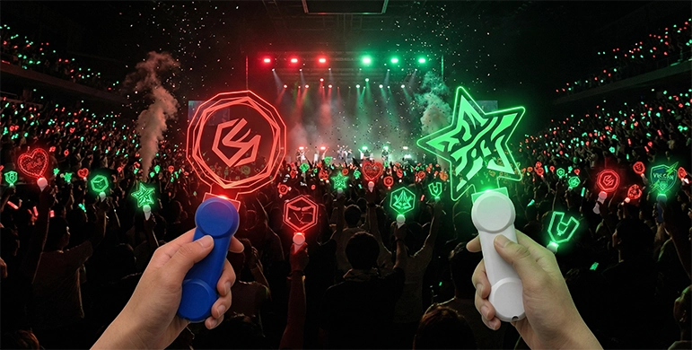
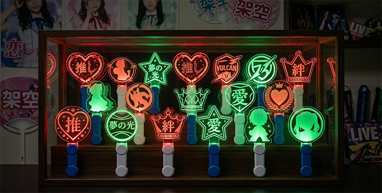
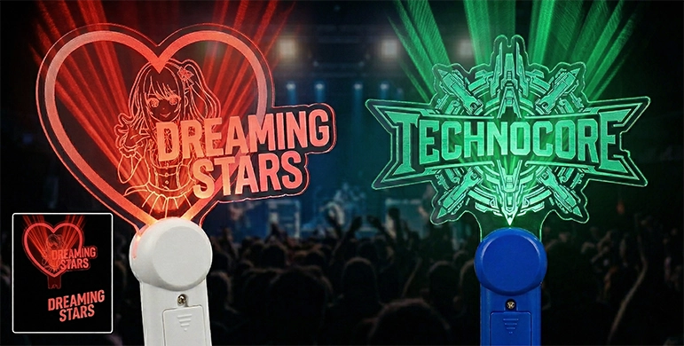
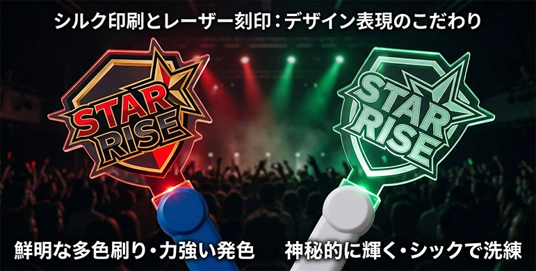
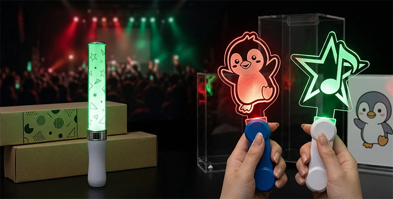
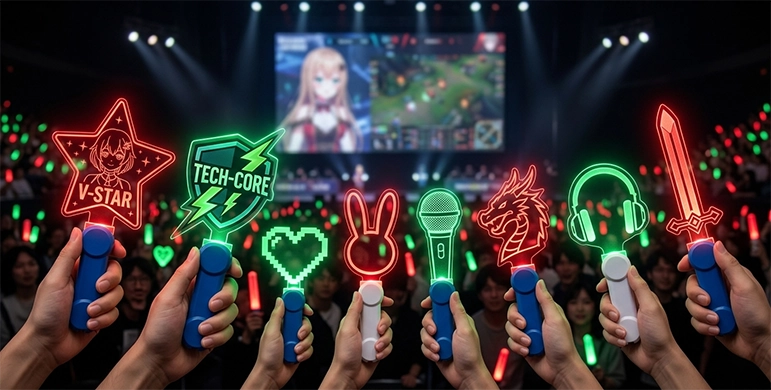
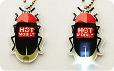
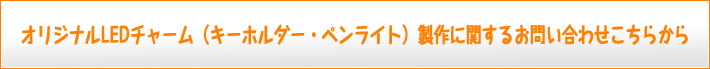
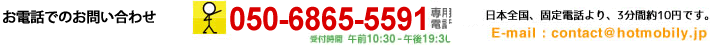

名称
オリジナルアクリルプレートLEDペンライト
製品の形状と色
アクリルの大きさ、形状
アクリル部分の形状や印刷は、オリジナルデザインで製作可能ですので、どのような形状でも製作できます。
(ダイカットアクリル)（一部技術的に困難な形状もあります。）
選択可能な持ち手 1
持ち手の色は、白色もしくは青色が基本となります。それ以外の色をご希望の場合、別途ご連絡下さい。
アクリル部分の仕様と加工
| 形状 | お客様の希望する形状でカットし製作します。（ダイカット） |
| 大きさ | 100mmX100mm以内が一般的ですが、更に大きいサイズでも製作可能です。 |
| 厚さ | 1枚あたり2.5～5.0mmが一般的ですが、オリジナルの厚さで製作することも可能です。 |
| 枚数 | 通常1枚で製作致します。最大3枚まで、組み合わせて製作可能です。 |
| 名入れ 1 | シルク印刷による名入れが可能です。最大3色程度まで。 |
| 名入れ 2 | レーザー加工による名入れが可能です。 |
| 製作料金 | アクリル板の大きさが大きく、厚さが厚い程、製作料金は高くなります。 |
製品サイズと重量
サイズ: 約 3.5cmX10cmX2.0cm (持ち手部分のみ)
製品重量：約 19g (持ち手のみ。電池含まず。)
電池：LR-44ボタン電池3個が必要です。
アクリル板付き参考重量：90g (100X100X5のアクリル板付きの製品重量)
最小製作個数
原則500個からの製作となります。（500個以下の製作をご希望の場合、事前にお問い合わせ下さい。）
包装
特に指定の無い限り、製品を1個ずつ個別に包装した個別OPP包装です。
台紙
既製品：50種類のデータから選択可
オリジナル印刷：お客様の入稿データを使用し、印刷します
支給された台紙封入、JANシール貼り等の軽作業は、@22円（税込）でお受けしております。
納期
試作品：製作開始より起算して7営業日+配送4日程度
量産品：量産開始より起算して20営業日～+配送4日程度
製品の製作価格は、製作対象のアクリルの大きさ、枚数、名入れ方法により異なります。
製作料金例
| 持ち手 | 持ち手1 |
| アクリル板サイズ | 100mmX100mm |
| アクリル板枚数・厚さ | 1枚・3mm |
| 印刷 | シルク印刷 1色 |
| 電池 | モニター用電池付属 |
| 500 個 | 1,000 個 | 3,000 個 | |
| 製作料金 | 990 円 | 825 円 | 715 円 |
製作料金計算例 1）持ち手1を使用。大きさ100mmX100mmのアクリル板1枚を使用し、シルク印刷1色で名入れした製品を1,000個製作した場合の製作料金
825円 X 1,000個 = 825,000円（税込）
その他製作料金
・裏面の名入れを2色以上で行う場合、追加で版型代金が1色あたり8,800円(税込)、製品単価が11円増し(税込)となります。
・裏表にレーザー刻印とシルク印刷は、＋22,000円（税込）にてご提案可能です。
製作料金計算例 2）持ち手1を使用。大きさ100mmX100mmのアクリル板1枚を使用し、シルク印刷2色で名入れした製品を1,000個製作した場合の製作料金
(825+11)円 X 1,000個(製品代) + 8,800円(追加版型代) = 844,800円(税込）

ホットモバイリーが提供する「オリジナルアクリルプレートLEDペンライト」は、高品質な透明アクリル素材を贅沢に使用し、お客様の自由なアイデアやデザインをそのまま立体的な光のアイテムとして形にできる点が最大の魅力です。市販されている筒状の既製品ペンライトとは大きく異なり、アクリル板そのものをオリジナルの形状に切り抜くことができるため、アニメキャラクターの精巧なシルエット、企業のシンボルロゴ、イベントの象徴的なマークなど、あらゆるデザインを高品質なグッズとして再現可能です。ライブ会場やイベントスペースといった暗闇の中でLEDライトを点灯させれば、美しくカットされたアクリルプレートの輪郭や表面に施された印刷デザインが色鮮やかに浮かび上がり、周囲の視線を惹きつける圧倒的な存在感を放ちます。また、アクリル板に通常2.5mm〜5.0mmというしっかりとした厚みを持たせることで、手にしたときの高級感と長期間の激しい使用にも耐えうる耐久性を両立しています。
アーティストの公式ライブグッズ、アイドルグループのコンサートグッズ、さらには企業向けノベルティまで、数多くのクライアント様から「選ばれ続ける」確かな理由がこの品質にあります。

近年、「推し活（おしかつ）」ブームの急激な加速により、自分たちだけのオリジナリティあふれる応援グッズを製作したいというニーズがかつてないほど高まっています。その中でもオリジナルアクリルペンライトは、推し活グッズの定番であり、SNS映えするフォトジェニックなアイテムとしても絶対的な人気を誇ります。コミックマーケットなどのイベントで頒布される同人グッズや、ファンクラブ限定のプレミアムな特典アイテムとしても高い評価を得ており、ファン同士の絆を深めるツールとして活躍します。.5mm〜5.0mmというしっかりとした厚みを持たせることで、手にしたときの高級感と長期間の激しい使用にも耐えうる耐久性を両立しています。
また、音楽ライブ、夏フェス、舞台公演などの「公式グッズ」としての大量ロット製作にも最適です。物販コーナーで販売されるペンライトは、来場者が会場で一体感を楽しむための必須アイテムです。形状やLEDの発光色、デザインにとことんこだわることで、イベントのコンセプトや世界観を最大限に表現することができます。
さらにエンターテインメント業界にとどまらず、遊園地、水族館、博物館といったテーマパークでの夜間イベント用グッズや、企業展示会・プロモーションイベントにおけるアイキャッチ効果を狙った販促ノベルティとしても、非常に幅広いシーンでご活用いただいております。

オリジナルアクリルペンライトを製作する上での最大の特長は、「ダイカット加工」による圧倒的な形状の自由度の高さです。一般的なペンライト製作では、あらかじめ決められた丸型や四角形などの定型フォーマットにはめ込むケースが多いですが、ホットモバイリーではレーザーカッターによる最新のカッティング技術を駆使し、アクリル板をお客様のご希望通りの複雑な形に精密にカットいたします。星型やハート型といった王道のモチーフから、動物のシルエット、緻密に計算された複雑なロゴマークの輪郭まで、100mm×100mmの範囲内（※ご要望に応じてさらに大きいビッグサイズのご相談も可能）であれば、デザインの可能性は文字通り無限大です。「このキャラクターの特徴的な髪の毛のハネまで正確に再現できるか？」「このエンブレムの細かなエッジをシャープに出せるか？」といったこだわりのご要望にも、熟練の技術でしっかりと対応いたします。.5mm〜5.0mmというしっかりとした厚みを持たせることで、手にしたときの高級感と長期間の激しい使用にも耐えうる耐久性を両立しています。
さらに、アクリル板を最大3枚まで組み合わせて重ねて製作する特殊な仕様も可能となっており、平面でありながら立体感と奥行きを持たせた斬新なデザインのペンライトも実現可能です。他社製品とは一線を画すオリジナリティあふれる形状で、ファンや顧客の心を強く掴む魅力的なグッズ製作を強力にサポートいたします。

アクリルプレートの美しさを最大限に引き出すためのデザイン表現（名入れ）には、大きく分けて「シルク印刷」と「レーザー加工（刻印）」という2つの優れた手法をご用意しております。 .5mm〜5.0mmというしっかりとした厚みを持たせることで、手にしたときの高級感と長期間の激しい使用にも耐えうる耐久性を両立しています。
シルク印刷は、お客様が指定した色（特色）をムラなく鮮やかに発色させたい場合に最適な印刷方法です。最大3色程度までの多色刷りに対応しており、アニメキャラクターの衣装の細やかな色分けや、企業の厳格なコーポレートカラーなどを正確に再現したい場合に強くおすすめいたします。インクがしっかりと乗ったパキッとした美しい仕上がりは、明るい場所で見ても高いクオリティを誇ります。
一方、レーザー加工は、アクリル板の表面にレーザーで微細な削りや傷をつけることでデザインを精巧に描き出す手法です。印刷のようにインクを一切使用しないため、長年愛用しても色が剥がれる心配がなく、持ち手からLEDライトの光を当てると、刻印された部分だけが光を乱反射して白く神秘的に輝き上がるのが最大の特徴です。シックで大人っぽい洗練されたデザインや、ワンランク上の高級感のあるノベルティを作りたい場合に非常に人気を集めています。
また、裏表に「シルク印刷」と「レーザー刻印」を組み合わせたハイブリッドな名入れ加工も可能で、光と色を巧みに操るより深みのある表現が追求できます。

ライブやイベントでよく使われる市販の「筒型LEDペンライト」や、ポキッと折って発光させる使い捨ての「ケミカルライト（サイリウム）」は、手軽である反面、形状が画一的になりがちです。筒の中にデザインシート（フィルム）を入れるだけでは、どうしても他グループや別イベントのグッズと似たような印象になってしまうという課題があります。 .5mm〜5.0mmというしっかりとした厚みを持たせることで、手にしたときの高級感と長期間の激しい使用にも耐えうる耐久性を両立しています。
しかし、オリジナルアクリルプレートLEDペンライトであれば、アクリル板そのものをキャラクターのシルエットやロゴの形状にダイカットできるため、一目でどのイベント・誰のグッズなのかがわかる圧倒的な独自性を打ち出すことができます。また、ケミカルライトのような使い捨てではなく、電池交換式（LR-44ボタン電池）のLEDを採用しているため、イベント終了後もご自宅に飾って楽しめる「メモリアルグッズ（記念品）」としての価値が非常に高い点も大きなメリットです。アクリルスタンド（アクスタ）のように、お部屋のインテリアやコレクションの一部として長く愛用してもらえるため、ファンの満足度向上に直結します。他のグッズと明確に差別化を図りたい、付加価値の高いプレミアムなアイテムを作りたいという企画ご担当者様に、自信を持っておすすめできるワンランク上の推し活グッズです。

アクリルペンライトは、従来の音楽アーティストやアイドルのコンサートに留まらず、次世代のエンターテインメント領域へと急速に活用シーンを広げています。特に昨今爆発的な人気を誇るVTuber（バーチャルYouTuber）の3Dリアルライブイベントや、ファンミーティングにおける公式グッズとしては、キャラクターの個性をそのままダイカットで表現できる本製品が絶大な支持を集めています。 .5mm〜5.0mmというしっかりとした厚みを持たせることで、手にしたときの高級感と長期間の激しい使用にも耐えうる耐久性を両立しています。
また、プロゲーマーが熱い戦いを繰り広げるeスポーツ（e-sports）の大型トーナメント大会では、チームロゴを模したスタイリッシュなアクリルペンライトが応援グッズとして採用され、会場をチームカラーで染め上げる熱狂的な演出に一役買っています。-44ボタン電池）のLEDを採用しているため、イベント終了後もご自宅に飾って楽しめる「メモリアルグッズ（記念品）」としての価値が非常に高い点も大きなメリットです。アクリルスタンド（アクスタ）のように、お部屋のインテリアやコレクションの一部として長く愛用してもらえるため、ファンの満足度向上に直結します。他のグッズと明確に差別化を図りたい、付加価値の高いプレミアムなアイテムを作りたいという企画ご担当者様に、自信を持っておすすめできるワンランク上の推し活グッズです。
さらに、アニメやゲームの世界観を現実の舞台で表現する2.5次元ミュージカル・舞台公演や、映画館での「応援上映」イベントにおいても、複雑な武器の形や魔法陣、キャラクターの固有アイテムを忠実に再現できる点が、ファン心理を深く満たすプレミアムグッズとして重宝されています。 .5mm〜5.0mmというしっかりとした厚みを持たせることで、手にしたときの高級感と長期間の激しい使用にも耐えうる耐久性を両立しています。
IP（知的財産）の価値を損なわず、世界観をそのまま形にできるオリジナルアクリルペンライトは、これからのエンタメ市場において欠かせないマストアイテムと言えます。
Q.持ち手の色は、標準の白と青以外に変更することはできますか？ .5mm〜5.0mmというしっかりとした厚みを持たせることで、手にしたときの高級感と長期間の激しい使用にも耐えうる耐久性を両立しています。
A. 基本仕様は白色または青色となっておりますが、ご注文のロット数や生産スケジュールの条件によっては、お客様のご希望に合わせたオリジナルカラーでの持ち手製作（成型色の変更）も対応可能な場合がございます。まずは営業担当までお気軽にご相談ください。
Q. 電池が切れた場合、後から電池交換をして使い続けることは可能ですか？
A.はい、もちろん可能です。本製品は入手しやすい「LR-44ボタン電池」を3個使用する設計となっており、お客様ご自身で市販の電池と簡単に交換していただくことができます。使い捨てではなく、思い出のグッズとして繰り返し長くご愛用いただけます。
Q.シルク印刷とレーザー加工、自分のデザインにはどちらがおすすめですか？
A.キャラクターの衣装や企業ロゴの「指定された色」を正確かつ鮮やかに表現したい場合はシルク印刷を強くおすすめします。一方、LEDを点灯させた時の「輝き方」や、インクを使わない「高級感・シックな雰囲気」を重視される場合はレーザー加工をおすすめします。デザインデータをお見せいただければ、最適な加工方法をプロの目線からご提案いたします。
ホットモバイリーのオリジナルアクリルプレートLEDペンライトは、推し活グッズ、コンサート・ライブグッズ、そして企業向けのプレミアムノベルティとして、圧倒的な存在感と他にはないオリジナル性を発揮する非常に強力なアイテムです。ダイカット加工がもたらす自由な形状、シルク印刷やレーザー加工といった多彩なデザイン表現が、お客様の「こんなグッズを作りたい」という想いを完璧なクオリティで実現させます。まずはお気軽にお見積もり依頼や無料のサンプル請求をご利用いただき、実際の製品が放つ確かな品質と魅力をお客様ご自身の目でお確かめください。
オリジナルアクリルプレートペンライトの他に、オリジナルLEDライトキーホルダーの製作も承っております。
会社や製品、イベント等のロゴマークを製品の表面・裏面の両面に印刷できます。製品の形状も円形や四角形だけでなく自由に加工できます。最低製作個数は500個です。
 |
| オリジナル形状 LEDライト |


{kind=link}
{kind=link}
{kind=link}
{kind=link}